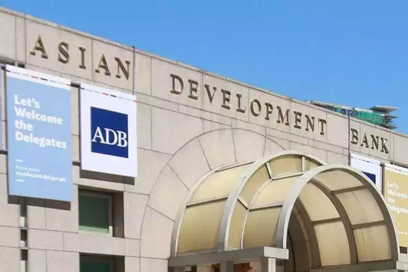

Amazon joins quick commerce race, to begin 15-minute deliveries in India
E-commerce major Amazon is set to finally join Zomato’s Blinkit, Swiggy Instamart, Zepto, Flipkart Minutes, BigBasket and others to compete in India’s $6-billion quick commerce market, the company’s rapid delivery arm, Samir Kumar, Country Manager, Amazon India told reporters on December 10.
The pilots will begin in Bengaluru later this month. While reports had earlier suggested Amazon will call its quick commerce offering as Tez, the company is yet to decide on a name.
“We will be starting a pilot to give our customers a choice to get their everyday essentials in 15 min or less,” Kumar said while speaking at the company’s flagship event, Smbhav happening in Delhi.
“Our strategy has always focused on 'selection, value and convenience' and our vision is to build a large profitable business in India...while we focus on implementing our strategy to offer the largest selection at fastest speeds and greatest value to customers in every single pin-code across the country,” Kumar added.
This will be the first major launch under Kumar’s tenure who took over from former head Manish Tiwary only two months ago. According to several media reports, Amazon's quick commerce foray has been in the works for several months and finally fructified at a time when customer preferences are changing in India.
An increasing number of customers are now moving away from 1 and 2 day deliveries and purchasing from quick commerce platforms instead. Quick commerce companies are eating into the share of e-commerce majors such as Flipkart and Amazon which has forced the two giants to launch their own rapid delivery offerings, analysts said.
Traditional e-commerce companies will look to build on their existing customer base.
"We already have millions of customers across India including Prime Members who trust us and will look forward to this convenience," Kumar said.
SEBI rolls out optional T+0 settlement for top 500 stocks; permits brokers to charge different rates

Indian stock market regulator, the Securities and Exchanges Board of India (SEBI), announced that the optional T+0 settlement will now be available to the top 500 stocks, according to an official circular released on Tuesday, December 10.
According to the circular, this announcement will be applicable from January 31, 2025.
“Optional T+0 settlement cycle shall be made available to top 500 scrips in terms of market capitalization as on December 31, 2024,” said SEBI.
The regulator also said that the option will be first rolled out for the bottom 100 companies of the total 500 list and the entire availability will be rolled out in intervals of 100.
“The scrips shall be made available for trading and settlement starting with scrips at bottom 100 companies out of the aforesaid 500 companies and gradually include the next bottom 100 companies every month till top 500 companies are available for trading in optional T+0 settlement cycle,” said SEBI in its official statement.
There are, in total, 25 stocks which already fall under the optional T+0 settlement cycle, and these upcoming 500 stocks will be an addition to the existing ones, as per the circular.
The market regulator also allowed all stock brokers to participate in the optional T+0 settlement cycle. Within the regulatory limit, stock brokers are now permitted to charge differential brokerage for T+0 and T+1 settlement cycles, effective from January 31, 2025.
On the participation of Qualified Stock Brokers (QSBs), SEBI said that entities which are designated and meet the parameter of a minimum number of active clients for qualification as QSB, “shall put in place necessary systems and processes for enabling seamless participation of investors in optional T+0 settlement cycle.”
SEBI also directed the stock exchanges to implement a “Block Deal window” which will be available only for the morning session during 8:45 am to 9:00 am in addition to the existing Block Deal windows of 8:45 am to 9:00 am and 2:05 pm to 2:20 pm for T+1 settlement cycle.
“The trades in optional T+0 block window session will be settled on T+0 settlement cycle,” said SEBI in context to the block deal window.
The QSB and Block Deal parameter update will be effective from May 1, 2025, according to the official release.
Missed filing your tax returns in July? By December 31 you should file your belated ITR for FY24

ITR filing: The deadline for filing belated Income Tax Returns (ITR) for the financial year 2023-24 is fast approaching. As the year draws to a close, it is essential to fulfill this obligation without delay. If you have not yet submitted your ITR, please note that December 31, 2024, marks the final opportunity to do so. However, failing to meet this deadline will result in penalties and interest charges for late filing.The deadline for submitting the Income Tax Return (ITR) for the fiscal year 2023-24 was July 31, 2024, applicable to taxpayers exempt from auditing their accounts.If you have missed that deadline, the Income Tax department allows you to file the belated ITR. As per Section 234F of the Income Tax Act, individuals who file their tax returns after the normal due date will incur a late filing fee of Rs 5,000. This fee is reduced to Rs 1,000 for taxpayers with a total income below Rs 5 lakhs. It is crucial to adhere to the deadline to avoid these additional costs.
“Any person who has not furnished a return of income within the time period allowed under section 139(1) or within the time period allowed under a notice issued under section 142(1), may furnish return for any previous year – at any time 3 months before the end of the relevant assessment year or before completion of the assessment, whichever is earlier. However, a belated return attracts late filing fees under section 234F," the Income Tax department noted.
If you miss the final deadline of December 31, 2023, heavy financial implications follow. Late filing of Income Tax Returns (ITR) incurs penalties as per Section 234F of the Income Tax Act. The penalties are as follows:
A penalty of Rs 5,000 if the return is filed on or before December 31 of the assessment year
A penalty of Rs 10,000 if the return is filed after December 31 but before the end of the assessment year (March 31)
For individuals with total income up to Rs 5 lakh, the penalty is reduced to Rs 1,000.Moreover, outstanding tax liabilities will accrue interest under Section 234A for the delay in filing the return.
Filing a belated return also affects the ability to carry forward certain losses, such as business or capital losses, except for losses under the head "Income from House Property."
In case of any mistakes in the belated return, a revised return can be filed by December 31, 2024.
In the event that a taxpayer fails to meet the deadline for filing a late return, they will not be able to submit an ITR for the financial year 2023-24 unless they receive a notice from the Income Tax Department. However, if the ITR filing was missed due to "genuine reasons," a request for condonation of delay can be filed under section 119.
This request should include a statement explaining the reason for missing the deadline. In such cases, a penalty of Rs10,000 will be imposed, and interest at a rate of 1% will be charged until the return is filed. Additionally, failure to file the ITR may result in prosecution under section 276 CC of the Income-tax Act.
‘White gold’ seen as pivotal to Europe’s massive trade deal with South America
The strategic importance of lithium is likely to have played a major role in the European Union’s blockbuster deal with Brazil, Argentina and three other South American countries, analysts say.
After 25 years of talks, the EU and five Mercosur countries (an alliance which includes Paraguay, Uruguay and, newly, Bolivia) reached a highly anticipated trade agreement on Dec. 6.
If ratified by the 27-nation bloc, the EU- Mercosur partnership will create one of the world’s biggest free trade zones, covering an estimated area of more than 700 million people and representing roughly 20% of global gross domestic product.
The European Commission, the EU’s executive arm, said the trade deal is designed to increase bilateral trade and investment, lower tariff and non-tariff trade barriers, create more stable rules and promote joint values, such as sustainable development.
Not everyone is in favor of the agreement, however. France and Poland are among those to have expressed opposition to the deal, warning it could create unfair competition for European agriculture.
Analysts at Dutch bank ING said the significance of critical raw materials like lithium seemed to be “making less headlines” in the coverage of the free trade agreement, despite the metal’s importance to Europe’s economic future.
“That’s surprising, given that a) the EU is very dependent on China for critical raw materials, b) countries like Argentina, Bolivia and Brazil hold large reserves of some of these critical raw materials and c) EU demand for these materials is expected to massively increase,” analysts at ING said in a research note published Friday.
“It may be difficult to quantify the exact economic value of having better access to these materials through closer ties with Mercosur, but we believe this particular element carried a lot of strategic weight for the EU [Commission] when striking the deal – especially as diversification or sourcing and securing supply is currently top of mind,” they added.Lithium, sometimes referred to as “white gold” due to its light color and high market value, is regarded as a critical component to the shift away from fossil fuels. It is commonly used in electric vehicles, cellphones and rechargeable batteries for laptops.
Latin America is estimated to supply roughly 35% of the world’s lithium, according to the International Energy Agency, with Chile (26%) and Argentina (6%) leading the way. The region is estimated to hold more than half of global lithium reserves, mainly located in Argentina (21%) and Chile (11%).
European Commission President Ursula von der Leyen described the EU-Mercosur trade deal as a “win-win agreement” that can save EU companies 4 billion euros ($4.24 billion) worth of export duties per year.
Meanwhile, Kaja Kallas, the EU’s foreign policy chief, singled out the importance of access to critical raw materials in her statement on the trade deal.
“For Europeans, it opens up a vast region to freely trade with, including access to critical raw materials, and diminishes the risk of competitors replacing us in our absence,” Kallas said on Friday.
ADB trims developing Asia's growth forecast, flags US policy risks

Developing Asia is likely to grow more slowly than previously thought this year and next, and the outlook could worsen if President-elect Donald Trump makes swift changes to U.S. trade policy, the Asian Development Bank said on Wednesday.
Developing Asia, which includes 46 Asia-Pacific countries stretching from Georgia to Samoa - and excludes Japan, Australia and New Zealand - is projected to grow 4.9% this year and 4.8% next year, slightly lower than the ADB's forecasts of 5.0% and 4.9% in September.
The downgraded growth estimates reflect lacklustre economic performance in some economies during the third quarter and a weaker outlook for consumption, the bank said.
Growth forecasts for China remain unchanged at 4.8% for 2024 and 4.5% for 2025, but the ADB lowered its projections for India to 6.5% for 2024 from 7.0% previously, and to 7.0% for next year from 7.2%.
"Changes to U.S. trade, fiscal, and immigration policies could dent growth and boost inflation in developing Asia," the ADB said in its Asian Development Outlook report, though it noted most effects were likely to manifest beyond the 2024-2025 forecast horizon.
Trump, who takes office on Jan. 20, has threatened to impose tariffs in excess of 60% on U.S. imports of Chinese goods, crackdown on illegal migrants, and extend tax cuts.
"Downside risks persist and include faster and larger U.S. policy shifts than currently envisioned, a worsening of geopolitical tensions, and an even weaker PRC (People's Republic of China) property market," the ADB said.
The ADB lowered its inflation forecasts for 2024 and 2025 to 2.7% and 2.6%, respectively, from 2.8% and 2.9% previously, due to softening global commodity prices.